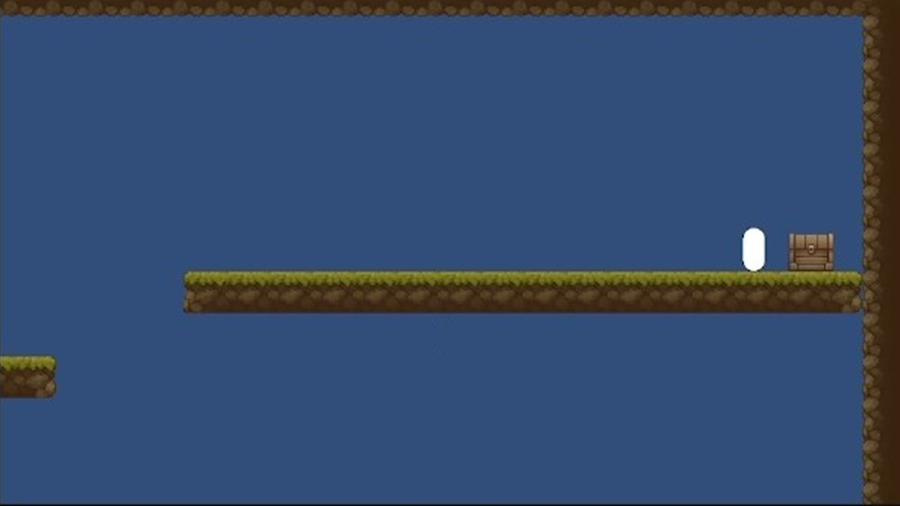
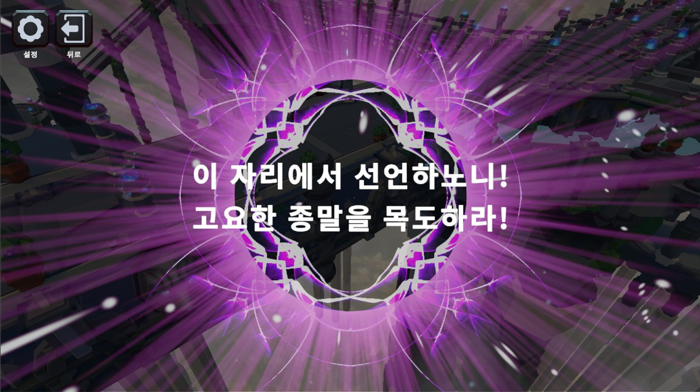
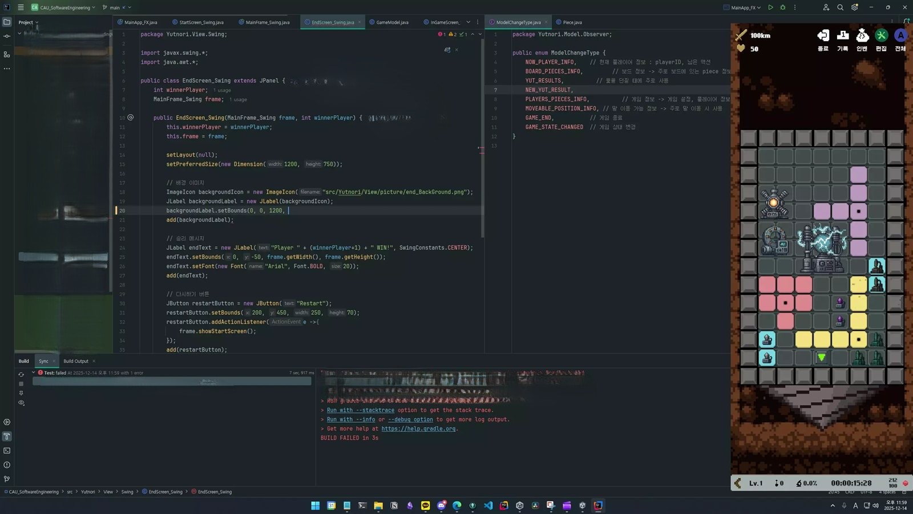

Dino Cleaner
공룡이 이동 수단인 세계에서 공룡을 세차하는 게임. 플레이어 애니메이션 · IK와 청소기 · 사다리 · 비행용 공룡 등 장비 시스템을 맡고 있습니다.
Unity 3D · Input System · ASMDEF · IK
자세히 보기 →GitHub ↗
[ Dino Cleaner 스크린샷 준비 중 ]
Game Client Engineer
기획자가 코드 없이 데이터를 넣고, 팀원끼리 서로 막히지 않는 구조를 고민하는 Unity 클라이언트 개발자입니다.
중앙대학교 소프트웨어학부 · 2027.08 졸업 예정
.gitignore와 레포 정리공룡이 이동 수단인 세계에서 공룡을 세차하는 게임. 플레이어 애니메이션 · IK와 청소기 · 사다리 · 비행용 공룡 등 장비 시스템을 맡고 있습니다.
외부 SDK 연동 데모용 2D 로그라이크를 만들어 납품하고, 실무진에게 SDK 사용성 개선안을 제안했습니다. 룰북 코드 제너레이터 제안이 다음 날 SDK에 채택됐고, Reporter 일괄 업데이트 예제가 연동 가이드에 반영됐습니다.

제시된 단어로 영창을 만들어 평가받는 대전 카드 게임. NGO 기반 호스트 권한(Listen Server) 구조와 MVC/Command 패턴, 28종 효과·20종 상태이상을 모듈화한 데이터 주도 엔진으로 130종 카드를 구현했습니다. 신규 카드 추가 공수 15분+ → 1분 내외.

키보드 · 마우스 입력이 공장의 동력이 되는 데스크탑 방치형 게임. Windows API 저수준 훅으로 게임 창 밖의 입력을 받는 기능과 시설 · 엔진 시스템을 구현하고, 엔진이 레벨업마다 모양과 색이 바뀌는 성장 방식을 기획했습니다.

팀 EventBus 규격대로 장비 이벤트를 Core에 선언하자 장비 패키지와 Core 사이에 순환 참조 발생
순수 데이터(Enum, Struct)만 담은 공용 Data 패키지를 팀에 건의해 협의 후 도입, 의존성을 단방향으로 정렬
팀 규격을 바꾸지 않고 장비 이벤트 발행, Data를 최하단에 둔 단방향 의존성으로 정리
실사 비율 애니메이션(Mixamo)을 카툰풍 캐릭터에 적용하자 손이 허공에 뜨거나 몸통을 관통
Animation Rigging 도입, 양손이 Two Bone IK로 청소기 그립을 따라가게 함
애니메이션이 바뀌어도 양손이 청소기 그립을 따라가 클리핑 해소
상태 키를 문자열로 쓰면 오타가 나도 에러 없이 스포일러 차단이 빠짐
인스펙터 상태 관리자(1안)와 룰북 → C# 코드 자동 생성(2안)을 장단점과 함께 제안
2안이 다음 날 SDK 0.0.5에 채택, 우리 게임 스키마가 공식 샘플로 포함
카드 이름 · 텍스트만 CSV로 읽고 효과는 카드마다 코드로 구현 → 카드를 고칠 때마다 코드 작업 필요
기획 팀원 제안으로 효과 이름 컬럼부터 합의 → 기획은 카드 행 채우기, 나는 컬럼별 커맨드 정의를 병렬 진행
카드 130종 구현, 신규 카드 추가 공수 15분+ → 1분 내외, 기존 효과 조합 카드는 기획 팀원이 직접 추가
NetworkVariable 변경을 구독해 스스로 갱신, 카드 선택 같은 입력은 Controller가 처리 — UI를 고쳐도 게임 규칙 코드는 그대로 둘 수 있게© 2026 Ko Seonghyeon